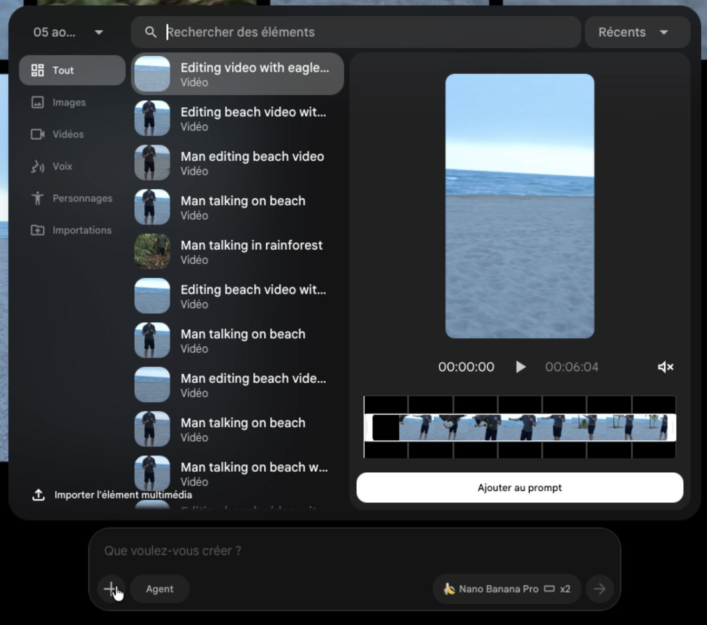
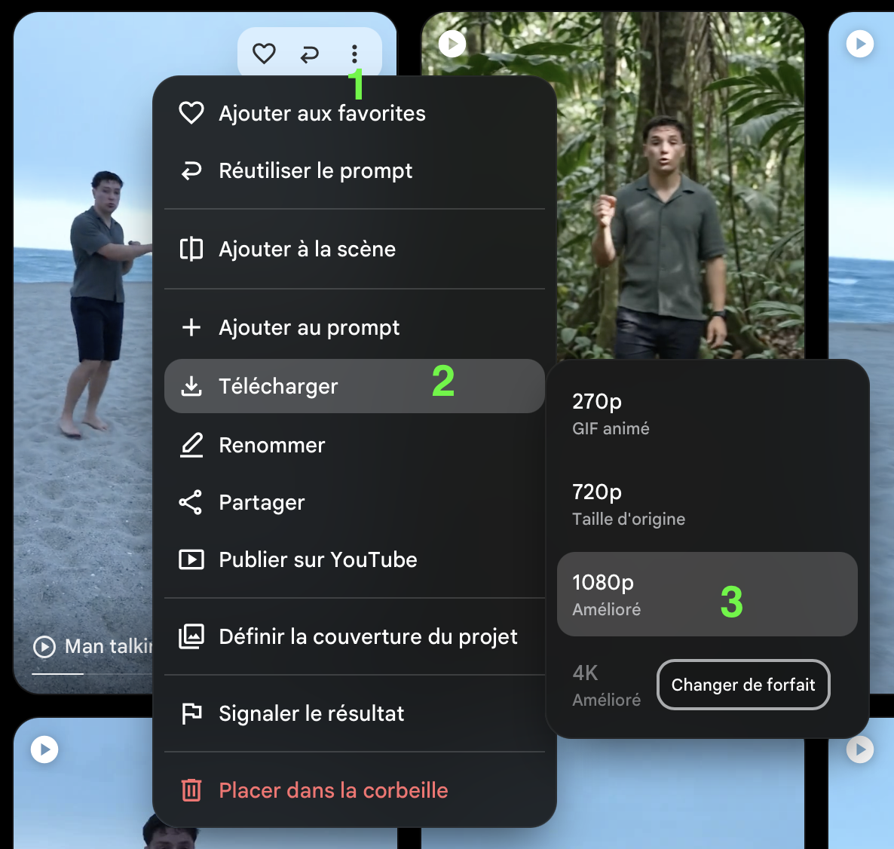
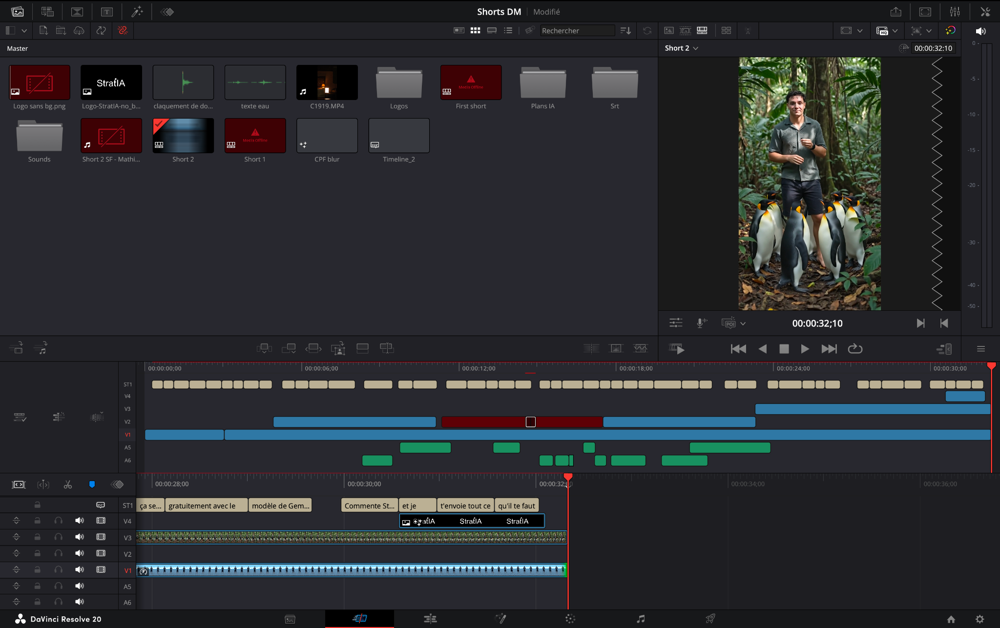

Beaucoup de choses, à peu près tout ce qui est imaginable en VFX, à vrai dire.
Clarification importante : cette méthode ne touche pas aux paroles. On ne fait dire à personne ce qu'il n'a pas dit. Ce n'est pas de ça qu'on parle ici, et ce n'est pas ce que fait cette méthode.
La conséquence est très concrète : les effets se décident avant le tournage. C'est la prise qui commande, donc autant savoir ce qu'on veut en tirer avant d'appuyer sur REC.
Un VPN. Le modèle Omni n'est pas accessible en France. Il faut utiliser un VPN (des gratuits sont disponibles, privilégiez un sécurisé) pour contourner cette réglementation.
Le plan gratuit de Flow donne 50 crédits par jour, et l'accès à Gemini Omni Flash. C'est ce qui rend la méthode faisable sans rien payer. Les crédits partent à chaque génération, donc autant préparer ses prompts avant d'ouvrir l'outil.
Une vidéo tournée par vos soins, même au téléphone, même en selfie.
Un LLM pour écrire les prompts (facultatif, mais ça fait gagner du temps). On utilise Claude, c'est celui qu'on trouve le plus utile au quotidien. ChatGPT en version gratuite fait le travail aussi.
Crédits : une génération coûte 20 crédits. Avec 50 crédits par jour, ça fait deux générations par compte et par jour. Une génération = un extrait de dix secondes maximum. Ça donne environ dix-sept secondes de vidéo finale par jour et par compte. Au-delà, deux options : attendre le lendemain, ou créer un deuxième compte.
La méthode
Huit étapes, dans l'ordre.
1. Tourner la vidéo
Imaginer les effets avant de tourner. Pour rappel, votre voix ne sera pas modifiée. Les VFX doivent être liés à ce que vous dites durant le tournage.
2. Découper la vidéo si elle dépasse dix secondes
Le modèle ne traite pas plus de dix secondes d'un coup. Et entre deux générations, il ne garde pas la consistance : d'une génération à l'autre, les détails bougent.
Donc on découpe, et on découpe en pensant au montage. Le repérage se fait à la main. On note, pour chaque extrait, à quelle seconde (ou à quelle frame) chaque élément doit apparaître et disparaître. C'est ce relevé qui sert de base au prompt, donc autant qu'il soit précis.
Deux règles pour que les cuts tiennent :
Laisser du chevauchement entre la fin d'un extrait et le début du suivant. C'est cette marge qui permet de rattraper le raccord au montage.
Couper là où le sujet est stable, ou sur un geste qui revient deux fois. Un mouvement identique de part et d'autre du cut, c'est le point de raccord le plus propre qu'on puisse avoir.
3. Écrire le prompt
Un prompt par extrait. Si vous passez par un LLM, donnez-lui le contexte complet, sinon il écrit à côté :
C'est un prompt pour Gemini Omni Flash sur Google Flow.
L'extrait sera assemblé avec d'autres au montage final.
Les cuts doivent rester simples : les éléments ajoutés disparaissent avant la fin de l'extrait, les suivants apparaissent après le début du suivant. Jamais un objet à cheval sur un raccord.
Les timestamps du relevé sont à respecter tels quels.
Tout le reste est verrouillé : la lumière, le cadrage, la caméra, le décor, le visage, les vêtements, la performance, le timing. On ne retouche rien de la prise.
On ajoute seulement, et de la manière la plus naturelle possible : contact avec la lumière existante, ombres portées, occlusions correctes quand l'élément passe derrière le sujet.
Les prompts plus bas servent de modèle. La structure est réutilisable telle quelle, seul le contenu change.
4. Importer l'extrait sur Flow
Un projet, l'extrait, le modèle Gemini Omni Flash, le mode ingrédient, puis le prompt.

Interface Flow : import de l'extrait et sélection du modèle Gemini Omni Flash.
5. Générer
Une génération à la fois. Lancer plusieurs générations en parallèle complique le suivi pour rien, et les crédits partent vite.
6. Vérifier et corriger
On regarde le résultat par rapport à ce qui était prévu. Pas de gabarit ici : la correction dépend de l'écart entre les deux. On nomme explicitement ce qui n'a pas marché dans le prompt, et on relance.
7. Exporter
En 1080p, puis directement sur la timeline de montage. Pas de conversion intermédiaire.

Export en 1080p depuis Flow, prêt pour le montage.
8. Monter
Deux choses à savoir avant d'assembler :
Les raccords. On repère les points où le mouvement est exactement le même d'un extrait à l'autre, ou les keyframes précises où le sujet refait un geste identique. C'est là qu'on fait matcher les prises. Le chevauchement prévu à l'étape 2 sert exactement à ça.
Le son. On utilise la bande son de la vidéo originale, et on pose les VFX par-dessus. Sur les passages parlés, les modèles ne tiennent pas encore la consistance audio d'un extrait à l'autre. Si l'audio généré est bon, rien n'interdit de le garder, mais l'original reste le choix le plus sûr.

Assemblage des extraits générés sur la timeline de montage.
Nos prompts
Ce sont ceux de la vidéo, tels quels. Trois prompts vidéo, un par extrait. Servez-vous en comme modèle.
Comment s'en servir : envoyez-les à un LLM avec votre propre extrait et votre relevé de timestamps, et demandez-lui de reprendre la structure en l'adaptant. C'est plus rapide que de repartir de zéro, et le résultat est plus stable.
Prompt 1 & 2 — Scène de plage
PromptEdit this vertical beach video. Real footage of a real man talking to camera at dusk. Add two things and nothing else: a polar bear with a small penguin on its back, and a whale breaching far out at sea.
PRESERVE
Keep the man strictly identical: same face, same body, same clothes, same watch, same bare feet, same gestures, same position and same size in the frame. Keep the original camera movement exactly as it is. Keep the original audio and voice, do not re-generate the speech, do not change a single spoken word, do not modify his mouth or his lip sync. Keep the light exactly as it is: overcast blue hour, cold, soft, low contrast, no sun.
The clip starts with nothing added on screen and ends with nothing added on screen.
CAMERA
The camera moves during this clip. He is in the frame for the first four seconds while the camera drifts, then around 3.9s the camera whips fast sideways, he leaves the frame completely, and from about 4.4s to the end the shot holds on the open sea and the empty beach with nobody in it.
Everything you add is anchored to the world, not to the frame: it stays at the same real place on the beach or in the sea while the camera moves, with correct parallax, and it must be correctly placed and correctly sized in the final framing after the whip.
TIMELINE
[0.3s to 1.0s] A real adult polar bear walks into the frame on the dry sand well behind him, on the side he points to, with a small penguin sitting on its back. It stops and stands still.
[1.0s to 2.8s] The bear stays there, breathing and shifting its weight slowly. The penguin turns its head once and shuffles on the bear's back.
[2.8s to 3.8s] The bear turns around and walks away out of the frame, carrying the penguin, and it is completely gone before the camera whips.
[3.9s to 4.4s] The camera whips. Nothing added is on screen during the whip.
[4.4s to 5.4s] Far out at sea, below the horizon and roughly in the middle of the visible water, a humpback whale breaches: the body rises out of the water at an angle, small in the frame because it is genuinely far away.
[5.4s to 6.0s] It falls back sideways into the sea with a heavy splash, white foam spreading on the surface and then fading into the waves.
[6.0s to the end] The sea and the beach are exactly as in the original footage, nothing added is visible.
GROUND
The sand is dry, pale and matte. No reflection of the bear or of the penguin on the sand, no mirror image, no wet or glossy ground, no shine. Only a soft diffuse contact shadow directly under the bear's paws, nothing more.
NEVER COME BACK
The bear and the penguin must be completely out of the frame before 3.9s and must never reappear. They must not be visible anywhere in the last part of the clip, not in the background, not at the edges of the frame, not revealed by the camera movement. The final framing on the sea and the sand must be clean.
REALISM
Photorealistic live action, as if filmed by the same phone camera in the same second: same digital noise, same cold desaturated colour, same soft low contrast, same handheld shake, motion blur on anything moving fast and during the whip. Correct scale, correct distance, real water physics for the breach. No cartoon, no CGI look, no glow, no particles, no rim light, no clean cutout edges, no text overlay. Do not add music or sound effects.
Make everything look real.
Prompt 3 — Scène de forêt tropicale
PromptEdit this vertical video. Real footage of a real man talking to camera. Two things change and only two: the environment around him, and the light falling on him so that it matches that new environment. Nothing else in the image may change.
SAME MAN
Same person, same face, same hair, same shirt, same shorts, same watch, same bare feet, same posture, same hand movements, same head movements, same timing, frame for frame. He says exactly the same words: do not re-generate the speech, do not change a single word, do not modify his mouth or his lip sync. He stands in the same spot and does the same thing from the first frame to the last.
FRAMING LOCK
Do not reframe anything. Same field of view, same focal length, same crop, same aspect ratio, same resolution, same handheld camera movement. The man must occupy exactly the same area of the frame, at exactly the same size and the same position, in every frame. No zoom, no pan, no re-centering, no stabilisation, no cropping of the edges. The output must align frame for frame with the input.
ENVIRONMENT
From the very first frame to the very last frame he stands in a dense tropical rainforest: forest floor of dark earth and fallen leaves under his bare feet, thick jungle immediately around him and behind him, tall trunks, big low leaves, hanging vines, a canopy closing overhead. No beach, no sand, no sea, no horizon and no open sky anywhere in the frame at any moment. The environment never changes during the clip: no transition, no morph, no fade, it is rainforest from start to finish.
LIGHT ON HIM
Relight him for the rainforest and nothing more: warm humid green light filtered through the canopy, soft dappled patches moving slightly on his shirt and on his face, warmer skin tone than on the beach, darker surroundings behind him so his silhouette stays readable. His shape, his features, his clothes and his movements stay exactly the same. Only the colour, the softness and the direction of the light on him change.
TIMELINE
[0.0s to 4.6s] He simply keeps talking in the rainforest, nothing else happens.
[4.6s to 7.2s] A group of about ten real emperor penguins waddles into the frame from both sides and from behind him, walking on the forest floor towards him. They stop around him without touching him, some looking up at him, some looking straight at the camera.
[7.2s to the end] They stay gathered around his feet, moving slightly, never touching him, never hiding his face or his body.
REALISM
Photorealistic live action, same camera as the source: same digital noise, same slight handheld shake, same lens softness. Correct scale, real contact between his bare feet and the forest floor, real shadows on the ground. No cartoon, no CGI look, no glow, no particles, no rim light, no text overlay. Do not add music or sound effects.
Aller plus loin
Si vous voulez dépasser le gratuit
Au moment où on écrit ces lignes, les offres Google bougent en permanence : essais d'un mois sur Google AI Pro, offres étudiantes qui ouvrent et se ferment selon les pays et les périodes. Ça vaut le coup de regarder ce qui est actif sur votre compte au moment où vous lisez.
On ne s'engage sur aucune de ces offres, elles peuvent très bien avoir disparu d'ici là. N'hésitez pas à utiliser Google AI Studio pour vous tenir au courant, ou trouver une méthode.
Il existe aussi des sites tiers qui font la même chose sans compte Google. On sait qu'ils existent, on ne les relaie pas et on ne veut pas être associés à leur utilisation. On y envoie son visage à un service dont on ne sait rien, et ce n'est pas un arbitrage qu'on va faire à votre place.
Contact & suite
Une question ?
Écrivez-nous en DM. On répond dès qu'on peut. On a d'autres priorités en journée, mais l'équipe passe dessus pour que ceux qui ont commenté ne restent pas bloqués.
La suite
Un test d'outil par semaine. Parfois un outil nouveau, parfois une autre façon d'utiliser les mêmes. On cherche systématiquement la version gratuite, et quand elle n'existe pas, la moins chère qui reste vraiment utile.
À garder en tête : privilégiez le manuel lorsqu'il est possible. Les modèles d'intelligence artificielle sont de véritables destructeurs d'environnement à travers le système qui permet de les rendre utilisables (les data centers). Au plus vous garderez du naturel, au plus vous servirez votre planète et les générations à venir.